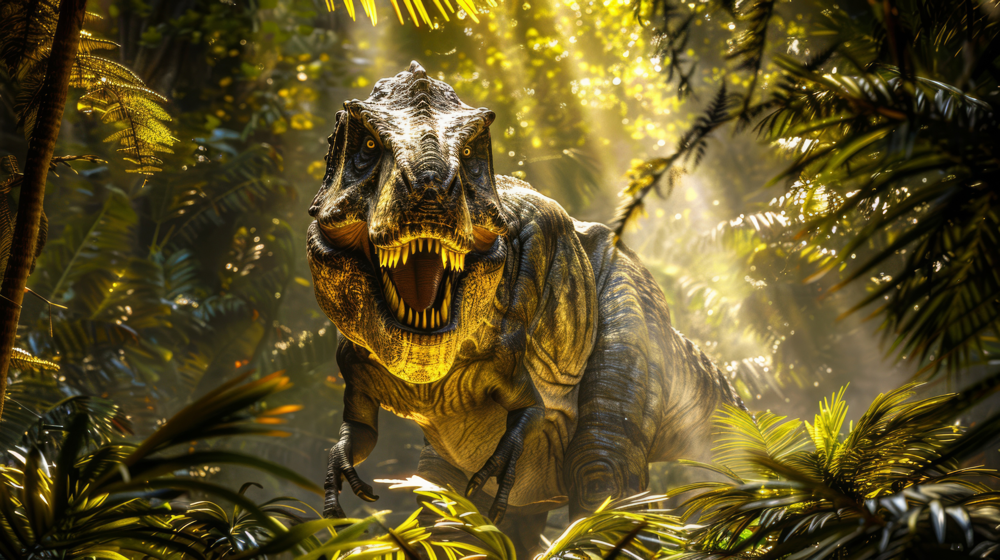

Explora las criaturas más antiguas.
Descubre especies, consulta su clasificación y recorre las épocas en que los dinosaurios dominaron la Tierra.
- 6.000+especies
- 15períodos geológicos
- 165 Maños de dominio

Mordida de récord
Su mordida se estima en más de 35.000 newtons, suficiente para triturar hueso. Sus dientes llegaban a unos 30 cm contando la raíz.
Sentidos afilados
Tenía grandes bulbos olfativos y ojos orientados hacia delante, con visión binocular para calcular distancias.
Brazos diminutos
Medían cerca de 1 m, con dos dedos y garras, y eran más musculosos de lo que parecen.